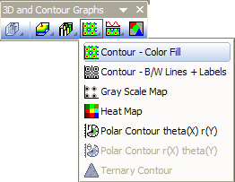
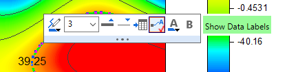

Farbiges Konturdiagramm
ColorFill-Contour-Graph

Datenanforderungen
- Wählen Sie mindestens eine Z-Spalte aus (oder einen Bereich aus mindestens einer Z-Spalte). Falls die Z-Spalte verbundene XY-Spalten besitzt, werden die XY-Spalten verwendet; ansonsten werden die XY-Standardwerte des Arbeitsblatts verwendet.
- oder
oder
- Matrix: Ein Matrixblatt. Ein Blatt mit mehreren Objekten wird unterstützt.
oder
- Bild: Ein Bildfenster. Ein Bild mit mehreren Frames wird unterstützt. Lesen Sie auf dieser Seite unten, wie Sie durch alle Frames gehen.
Diagramm erstellen
Aktivieren die erforderlichen Daten.
Wählen Sie im Menü
oder
Klicken Sie auf die Schaltfläche Kontur - Farbabbildung der Symbolleiste 3D- und Konturdiagramme.
- 
Weitere Einzelheiten zum Erstellen und benutzerdefiniertem Anpassen von Konturen mit Farbfüllung finden Sie im Kapitel 3D- und Konturdiagramme.
Vorlage
Arbeitsblatt
Matrix/Bild
(Alle im Origin-Programmordner installiert.)
Notizen
- Bereiche von Z-Werten werden auf einem XY-Gitternetz mit Hilfe von Konturlinien und den Füllfarben aus der Farbpalette angezeigt.
- Konturdiagramme aus dem Arbeitsblatt unterstützen benutzerdefinierte Grenzen. Um die Grenzen des Konturdiagramms festzulegen, öffnen Sie bitte den Dialog Details Zeichnung und wählen Sie die Registerkarte Kontur Info.
- Sie können die Daten der Konturdaten extrahieren, indem Sie mit der rechten Maustaste auf ausgewählte Konturlinien klicken und die Option Konturlinien extrahieren wählen. Einzelheiten finden Sie unter diesem Thema.
- Klicken Sie zweimal (kein Doppelklick) auf eine Konturlinie und zeigen Sie eine Minisymbolleiste zum benutzerdefinierten Anpassen des einzelnen Layers an.
- 